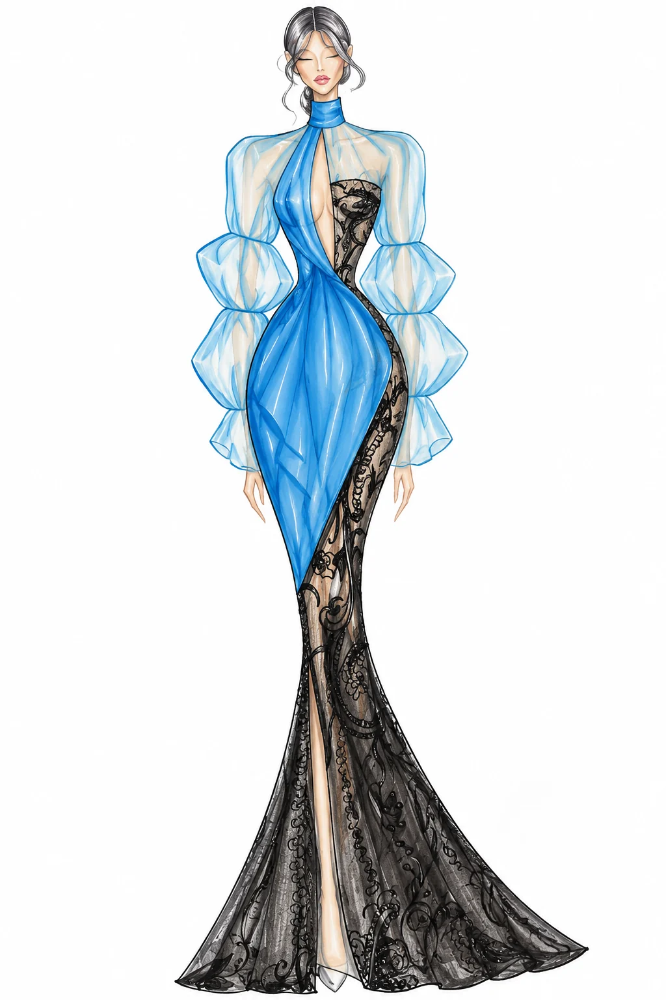
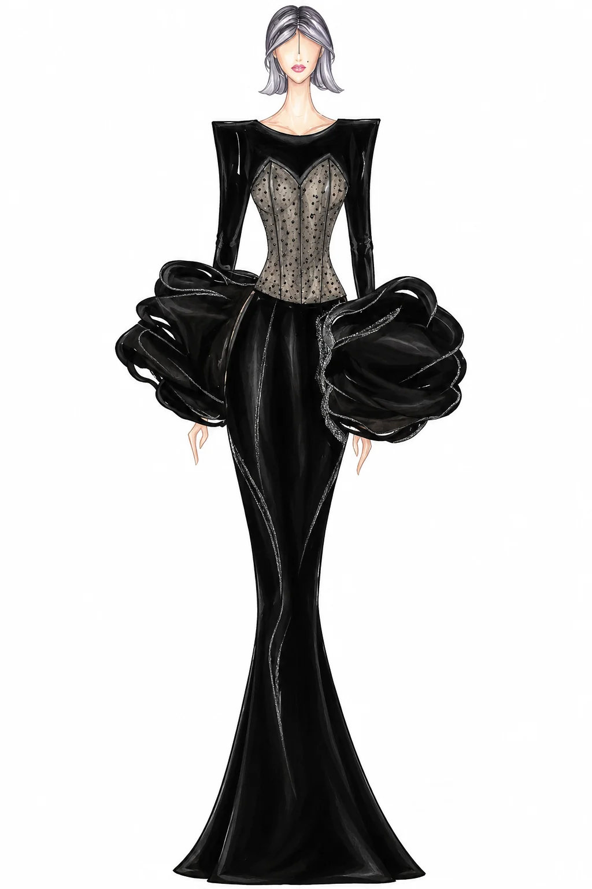
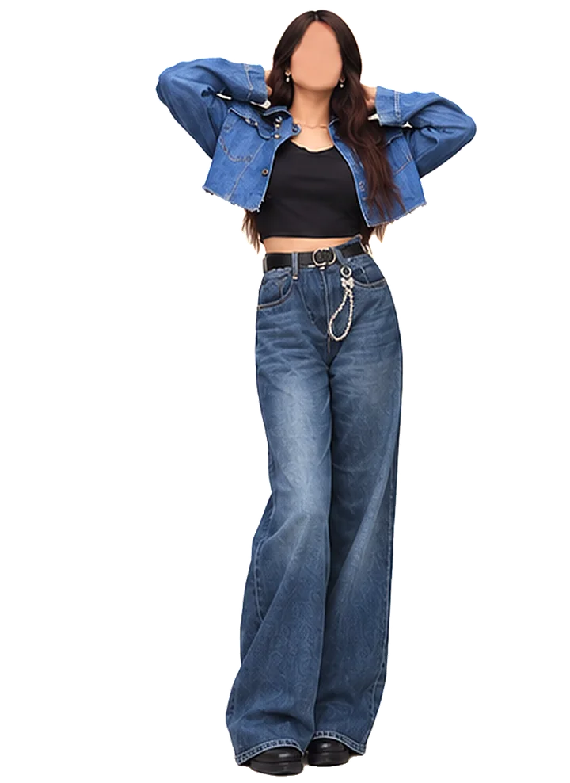
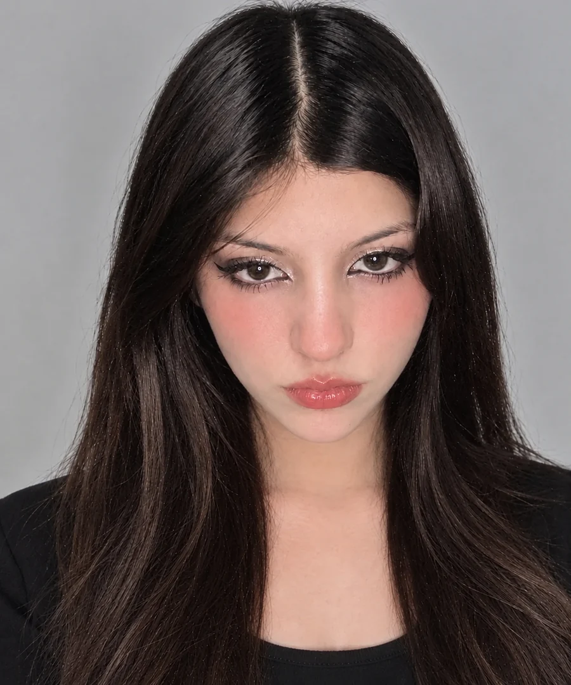

The Luxo Fashion Show
Backstage dresser- Partnered with models and production teams to keep timing tight and stage transitions fluid.
- Checked garment alignment, closures and accessories before every walk so each silhouette hit the runway flawless.
Portfolio · Couture & Styling
Fashion designer & stylist who turns abstract ideas into outfits with a point of view, from the runway backstage to the photo shoot.


I The Couture Collection
Evening silhouettes built from sculpted satin, sheer lace and structured corsetry. Tap a plate to see it up close.
Saturated blue against black, then softened to an icy, translucent tulle.
Black on black: patent shine, beaded illusion and hand-drawn pattern.
One idea explored three ways: ivory corsetry, green satin and a detachable sleeve.
Notes From the design sheet
II The Sketchbook
Every look starts as a drawing. Tap one to see it up close.
Lace, denim and a little drama.Pencil croquis, marker and coloured-pencil rendering and digital illustration, from first idea to finished look.
III The Atelier
Hand embroidery, built up one bead at a time. Tap a piece to see the stitches up close.
IV The Lookbook
Six looks I’ve styled and worn, from weekend denim to Navratri nights. Drag the stage or tap a hanger to change the look.

Look 1 of 6
Weekend denim
A cropped denim jacket over a black crop top, high-rise wide-leg jeans and a silver chain swinging from the belt loop.

V The Designer
I’m an omnivert, and my work needs both sides of me.
Backstage, I’m the one keeping models, timing and production in sync. In the studio, I’m deep in research, sourcing fabrics, pinning every seam until the silhouette sits right or beading an embroidery piece one stitch at a time. I hold a Master’s degree in Fashion Designing and I style across every mood, though you’ll most often find me somewhere between oversized streetwear and a sharp, casual-chic blazer. Ask me about iridescent snakes and I won’t stop talking.
Wide-leg denim, cropped jackets and a chain that catches the light. Comfortable, loud and completely intentional.
Structured tailoring and clean lines, softened just enough to feel like me in a meeting room.
Easy pieces with one perfect detail. Effortless on the surface, considered underneath.
VI Experience
From runway pressure to editorial shoots, every role has been about making clothes look their best in the moment that counts.
Master’s Degree in Fashion Designing
Understanding the person, the brief and the story the look needs to tell.
Colour, texture and references pulled into one clear direction.
Finding garments and fabrics that match the vision and the budget.
Precise adjustments until every silhouette flatters.
The bow, the glasses, the bandana: details that make it personal.
VII Skills
Hands-on craft and the digital tools to present it.
VIII Contact
Styling a shoot, building a personal look or need an extra pair of hands backstage? Say hi.